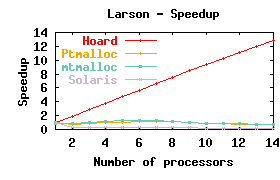
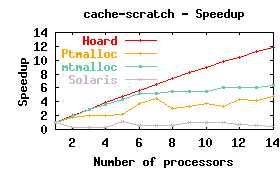

Screenshots
Because Hoard is a transparent plug-in replacement, ordinary screenshots don't make much sense, since the applications look and work the same! However, it's easy to visualize Hoard's impact on application performance. Here are a few example speedup graphs. Ideally, the speedup as the number of processors increases is a straight diagonal line going from the lower left of each graph to the upper right. These benchmarks compare Hoard to Ptmalloc (the Linux allocator), mtmalloc version 8, and the Solaris default allocator, and are run on a 14-processor Sun.

|
|
This benchmark has multiple threads, each allocating and freeing objects. It stresses raw scalability of allocation in individual threads. In this case, Hoard achieves a linear speedup. Ptmalloc scales to four processors but then runs out of steam. |
|  |
|
In this benchmark, multiple threads allocate objects and pass some objects to other threads that free them. This stresses the ability of the memory manager to handle object sharing. Only Hoard scales for this case. |
|  |
|
A test of whether a memory manager avoids causing false sharing of cache lines (an insidious effect that destroys scalability). The linear speedup shows that Hoard avoids false sharing completely. |